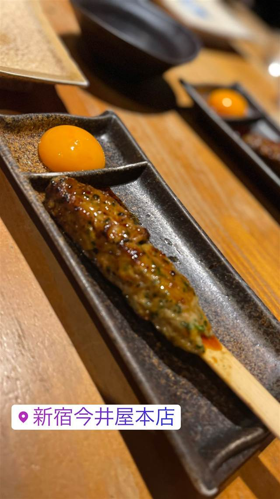
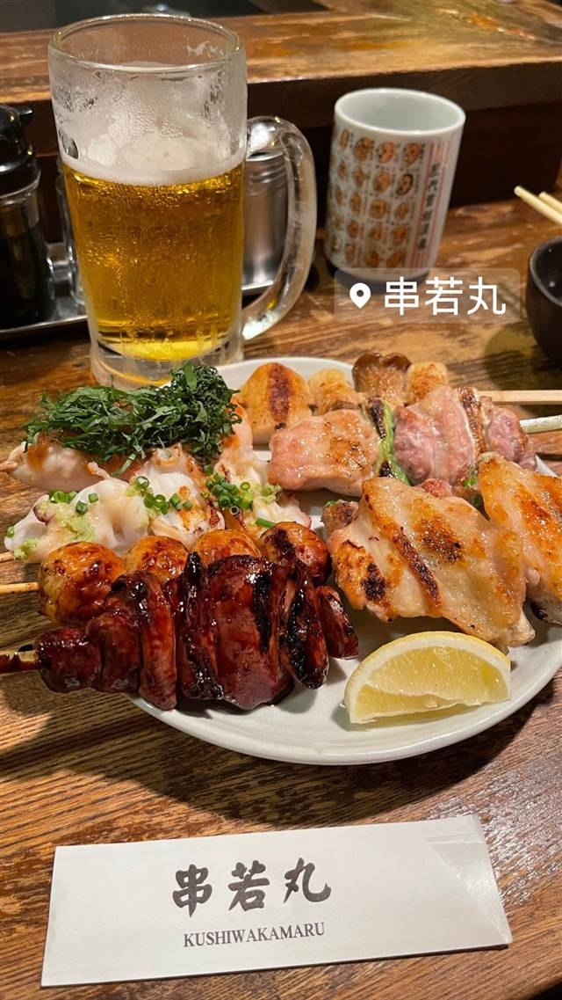
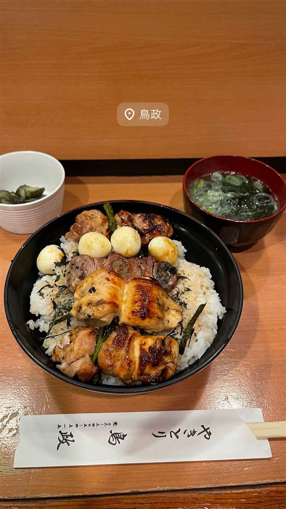
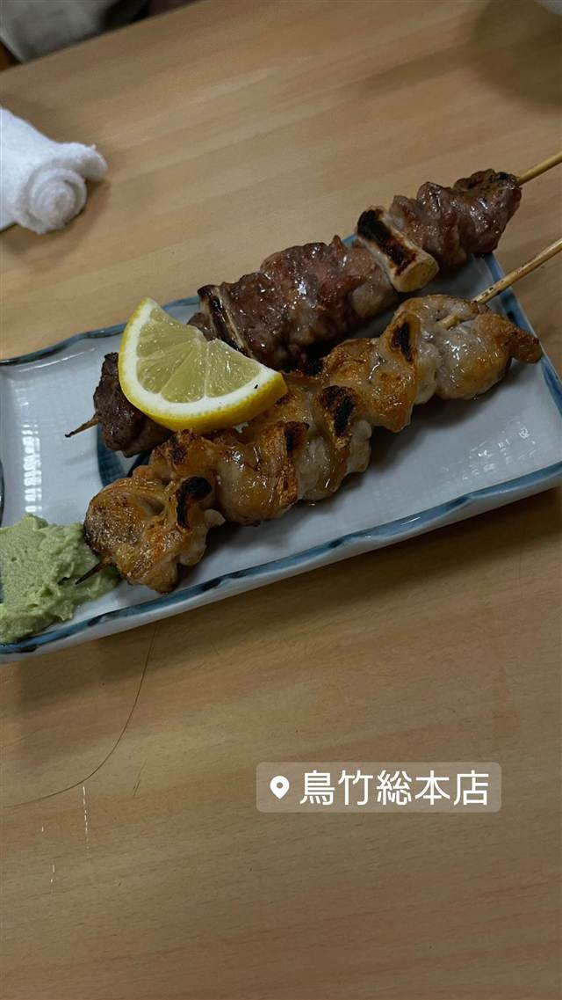

新宿 今井屋本店
約100項目の認定試験に合格した職人だけが焼く比内地鶏
新宿今井屋本店
「新宿 今井屋本店」は、比内地鶏専門の焼き鳥店。秋田で放し飼いにより140日ほどかけて育てた雌の比内地鶏を使い、店内で『焼方人』と呼ばれる約100項目の社内認定試験に合格した職人だけが焼き鳥を仕上げる。
TRIVIA
豆知識
- 自社の焼き鳥職人には『焼方人』という約100項目の認定試験があり、合格者しか焼き鳥を提供できない
- 使用する比内地鶏は雌のみを厳選し、通常より大きく育てた個体を使う
REVIEWS
世間の評判
3.49食べログ
焼き鳥の質と個室の落ち着き
- 焼き鳥や親子丼など各料理の質の高さを本当に美味しいと評価する声が多い
- 地下の落ち着いた空間とプライベートルーム完備の点を評価する声が多い
- スタッフの丁寧な接客とカウンターや掘りごたつなど席の多様さを評価する声が多い
- 夜間は予約が推奨されるほど混み合い待ち時間が出ることもあるという声がある
食べログ 口コミ1385件
| 系譜 | ダイヤモンドダイニング（DDグループ）が展開する比内地鶏専門の焼き鳥店 |
|---|---|
| 看板 | 秋田県産・雌の比内地鶏を使った焼き鳥、つくね |
| こだわり | 比内地鶏は放し飼いで140日ほどかけて育てた「地鶏の女王」とも呼ばれる希少な地鶏で、通常の焼き鳥用鶏より一回り大きい。店内には『焼方人』という社内認定制度があり、約100項目の自社基準と検定試験に合格した職人だけが焼き鳥を提供できる |
| どこから | 都心 |
| 営業時間 | 月〜金 17:00-23:00 土・日 11:30-14:30、17:00-23:00 |
| 予算 | 昼 ¥1,000～¥1,999 夜 ¥5,000～¥5,999 |
| 定休日 | 無休 |
| 場所 | 新宿三丁目 東京都新宿区新宿3-33-10 新宿モリエールビルB1F |
| メモ | 新宿三丁目駅近く、地下1階の隠れ家的な立地 |
食べたもの：つくね
NEARBY
近い店・同じ系統の店
-
 ★
コーヒー 新宿三丁目
AALIYA COFFEE ROASTERS
37年続く本店譲りのフレンチトーストを並ばず味わえる
昼 ¥1,000～¥1,999 夜 ¥1,000～¥1,999
★
コーヒー 新宿三丁目
AALIYA COFFEE ROASTERS
37年続く本店譲りのフレンチトーストを並ばず味わえる
昼 ¥1,000～¥1,999 夜 ¥1,000～¥1,999
-
 ★
つけ麺 新宿三丁目駅
つけ麺 五ノ神製作所
食べログ百名店に選ばれた海老の旨み凝縮スープのつけ麺
昼 ¥1,000～¥1,999 夜 ¥1,000～¥1,999
★
つけ麺 新宿三丁目駅
つけ麺 五ノ神製作所
食べログ百名店に選ばれた海老の旨み凝縮スープのつけ麺
昼 ¥1,000～¥1,999 夜 ¥1,000～¥1,999
-

焼き鳥 中目黒駅 串若丸 本店 ドラマやCMにも登場する馬蹄形カウンターの炭火焼き鳥 夜 ¥3,000～¥3,999 -

焼き鳥 表参道駅 鳥政(とりまさ) 備長炭で焼く希少なメスの親鳥、行列必至の焼き鳥丼 昼 ¥1,000～¥1,999 夜 ¥6,000～¥7,999 -

焼き鳥 渋谷 鳥竹 総本店 創業から60年継ぎ足す秘伝タレの5層仕立て大串やきとり 昼 ¥1,000～¥1,999 夜 ¥3,000～¥3,999 -
 焼き鳥 渋谷
博多串焼き・野菜巻き工房 渋谷宮益坂のごりょんさん
博多で家を守る女将さんにちなむ店名、名物は野菜巻き串
夜 ¥4,000～¥4,999
焼き鳥 渋谷
博多串焼き・野菜巻き工房 渋谷宮益坂のごりょんさん
博多で家を守る女将さんにちなむ店名、名物は野菜巻き串
夜 ¥4,000～¥4,999
ONSEN & SAUNA